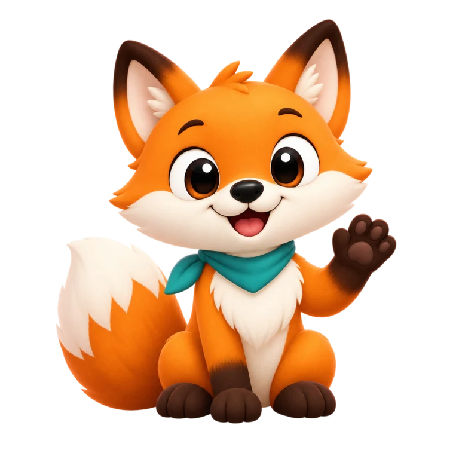
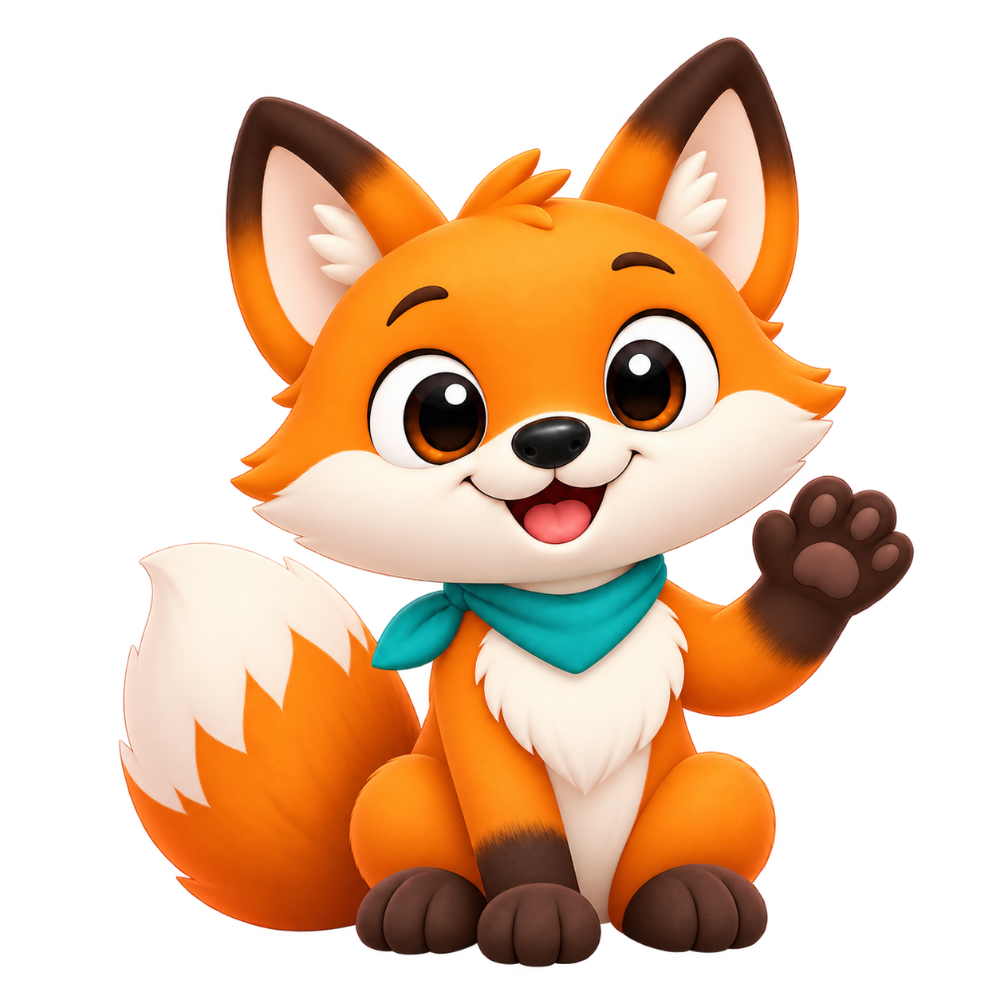
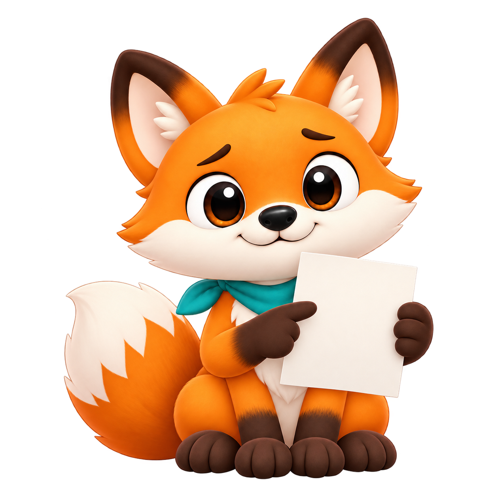
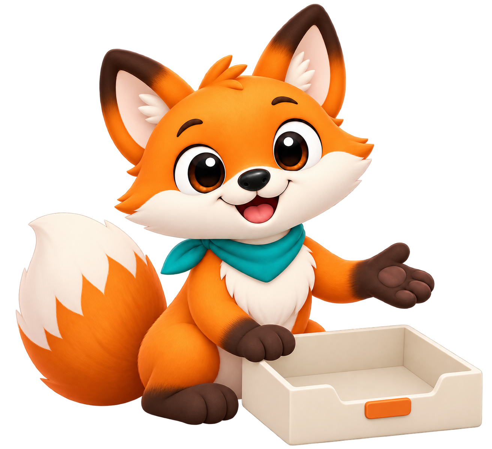

Raposa — poses propostas
Master aprovado como estilo; poses e movimento aguardam avaliação. A primeira carta mostra a referência histórica.

Referência v0.4.0Personagem histórica do app
 Repouso / masterEstilo aprovado pelo proprietário
Repouso / masterEstilo aprovado pelo proprietário

SaudaçãoPose proposta
LeituraPose proposta
TrabalhoPose proposta
SucessoPose proposta

AtençãoPose proposta

VazioPose proposta